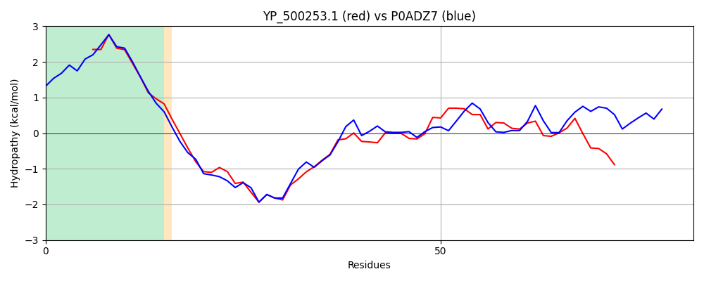

YP_500253.1
Hit Accession: P0ADZ7
Hit TCID: 3.A.5.1.1
Hit Description: gnl|BL_ORD_ID|8763 gnl|TC-DB|P0ADZ7|3.A.5.1.1 UPF0092 membrane protein YajC OS=Escherichia coli (strain K12) GN=yajC PE=1 SV=1
Mach Len: 82
e:0.000000
Query TMS Count : 1
Hit TMS Count: 1
TMS-Overlap Score: 0.850000
Predicted Substrates:CHEBI:8526;protein polypeptide chain
BLAST Alignment:
| Protein Hydropathy Plots: | |
|---|---|
 | |
Pairwise Alignment-Hydropathy Plot: | |
|  | |